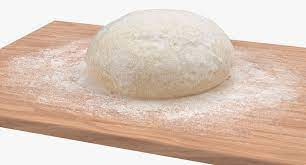

How to make a Pizza

Making a Pizza is the next best thing to learn
after flour tortilla. It's not too different.
Everyone loves pizza, and you should
learn how to make it from scratch. You will need
- 3 cup of flour
- 1 cup of warm 43C water
- 1 teaspoon of oil
- 1 spoon of instant yeast
- salt and/or seasoning
The use of yeast
is very picky. You might fail, but can easily
start again and get a good habit.
Salt will kill yeast, so don't combine them in water.
boil your kettle almost half way, add the yeast and sugar, and wait until
it foams. Then you are successful. If it doesnt foam, try again.
Next, follow this procedure.
- Mix the dry ingredients, flour and salt or herbs.
- Add the oil, and mix in. Next add the yeast in warm water
- Knead the dough until its firm and soft.
- The ratio of 1 cup to 1/3 cup of water is perfect, however
add more water or flour if needed to get a perfect dough.
- Let the dough sit for 1 hour. It should rise. If not,
if the yeast was foaming, you may still have a rise of
your dough in the oven, because your dough is cold.
Test it!
- Roll round, add toppings, and bake at 200C for 20-25 minutes, depending
on your oven.
- Eat!
And thats the recipe. I encourage you to try milk instead of water,
and different herbs.